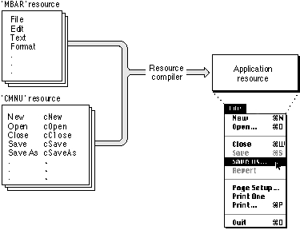
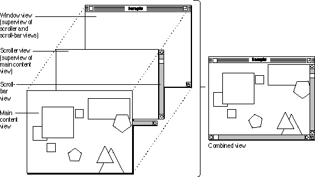

Legacy Document
Important: The information in this document is obsolete and should not be used for new development.
Important: The information in this document is obsolete and should not be used for new development.


Creating a MacApp Application
One common way to create a MacApp application is to start with one of the sample applications distributed with MacApp and modify its code. The Skeleton application is supplied specifically for this purpose. Adding incremental changes to a working application makes it easier to track down any errors that occur as you add new features.To create your own application, you generally need to complete these steps:
These steps are described in the sections that follow.
- Define subclasses of key MacApp classes.
- Define resources to specify application menus.
- Define one or more view hierarchies to display the application's data.
- Write a
mainroutine to initialize MacApp, create an application object, and run the application.
Defining Subclasses of Key MacApp Classes
The MacApp class library and the sample applications supplied with MacApp provide many predefined object classes. An application can use any of these classes. As a rule, you will always define subclasses of the following MacApp classes:
The Skeleton sample application implements simple subclasses of
- TApplication. You define a subclass of
TApplicationand override theDoMakeDocumentmethod to create the kind of documents your application requires.- TCommand. MacApp supplies several subclasses of
TCommandto perform specific operations. You define additional subclasses to perform operations in your application.- TDocument. MacApp supplies several kinds of document classes. Since every application specifies its own data, you define a subclass of a MacApp document class to handle your specific data. You override the
DoMakeViewsmethod to create a window and views to display the document's data.- TView. Most applications define one or more subclasses of
TViewto display data or get user input. You may also need to define a subclass ofTWindow, a subclass ofTViewthat implements standard Macintosh window behavior.
TApplication,TCommand,TFileBasedDocument(a subclass ofTDocument), andTviewthat your application can build on.Defining Resources to Specify Application Menus
A resource definition is a text description of a resource that matches the resource format defined by its resource type.In MacApp, you use resource definitions to specify the menus for an application. You define an
'MBAR'resource to specify the menus that appear in the application's menu bar and a'CMNU'resource to specify the menu commands that appear in a specific menu. The'CMNU'resource associates a command number with each menu item. For example, MacApp associates the command numbercNewwith the New menu command from the File menu. You define similar command numbers for menus you create.A resource compiler such as Rez converts
'MBAR'and'CMNU'resource definitions into compiled resources that become part of the application. Figure 1-2 shows how this process works to create the File menu.Figure 1-2 Specifying menus in MacApp

When the application is launched, these resources determine the application's menus. (For more information on how to use these resources in your application, see "Working With Menu Resources," beginning on page 300.)
Defining a View Hierarchy to Display the Application's Data
A view is an object instantiated fromTViewor a subclass ofTView. A window object in MacApp is also a view because theTWindowclass is a subclass ofTView.MacApp uses a view hierarchy, which is a series of related views that may include a window, to display data. Each view in the hierarchy, except for the window, has a superview. A view is drawn on top of and within the boundaries of its superview.
Figure 1-3 shows a MacApp window with a simple view hierarchy.
Figure 1-3 A view hierarchy in MacApp

You can use a view editor application such as Ad LibTM (available from Apple Computer) to create and edit complex view hierarchies in a graphical environment. The resulting view hierarchies can be stored as text resource definitions or as compiled resources. Compiled
'View'resources are included in the application. MacApp provides a global object, calledgViewServer, with methods the application can call to create a view hierarchy from a view resource. For more information on views and view hierarchies, see Chapter 8, "Displaying, Manipulating, and Printing Data," and Chapter 17, "Working With Views."Writing a Main Routine
Your application must include amainroutine that initializes MacApp, creates an application object, and runs the application. Themainroutine is written by you and performs these operations:
For a full description of how to initialize MacApp and run your application, see Chapter 4, "Launching and Terminating an Application." The sample applications distributed with MacApp provide examples of several different implementations for the
- It must call
InitUMacApp, a macro which
- makes sure the application can run on the current machine, and that all hardware and software features the application requires are available
- initializes Macintosh Toolbox managers that most applications use
- initializes MacApp's core features
- creates various manager objects to provide services to the application
- It may initialize additional MacApp units that weren't initialized when
InitUMacAppwas called.- It may initialize additional units created by the developer. This process may include registering developer-defined view classes to ensure that code for those classes is included by the linker.
- It must create and initialize an application object, then call its
Runmethod to run the application.
mainroutine. For example, the Calc application displays a startup screen during its launch sequence.After executing the
mainroutine, your application is up and running, ready to process any events it receives. Event processing is described in the next section.